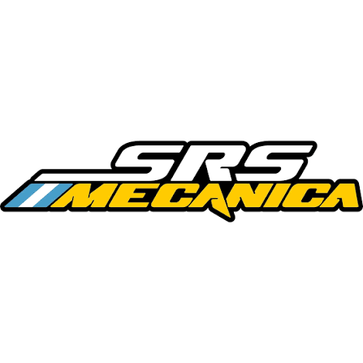
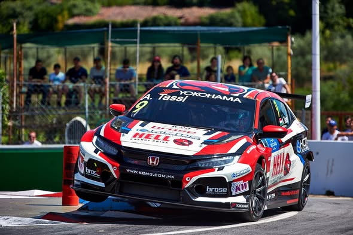
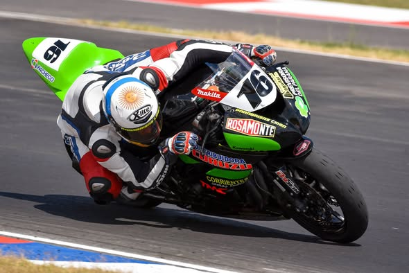
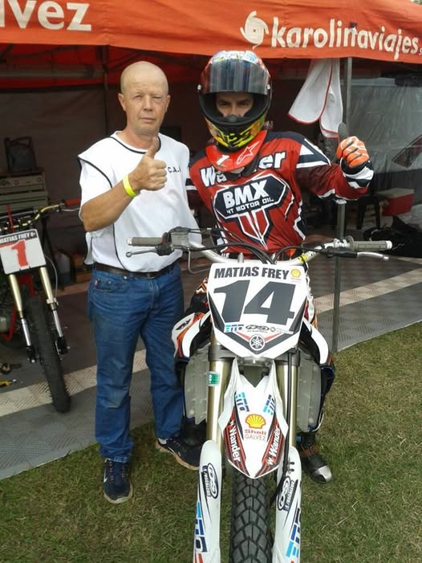
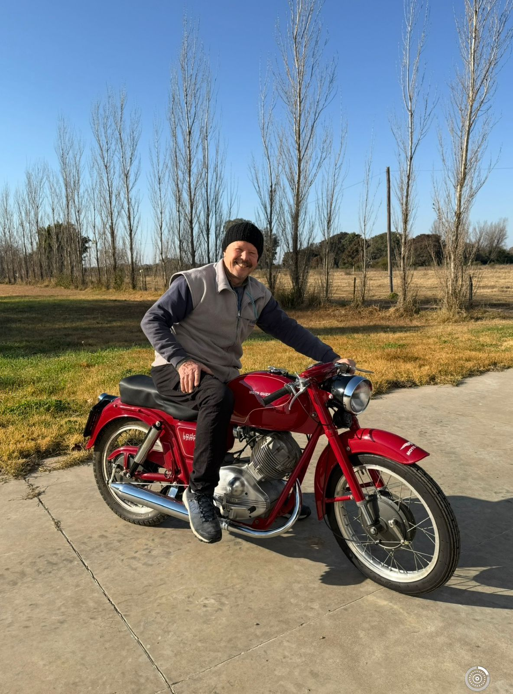
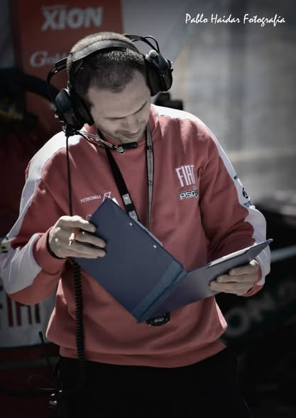

1977 · El comienzo
Las primeras reparaciones y la participación de César en motocross marcaron el inicio del taller.

Mecánica · Tecnología · Competición. Experiencia familiar desde 1977.
🎉 ¡En 2027 cumplimos 50 años!
La cuenta regresiva para nuestro año aniversario:

Soluciones para motos de calle, vehículos de competición y empresas.
SRS Mecánica fue fundada en 1977 por César Fernández y Ana Mattei, cuando estaban formando su familia. Comenzaron reparando motos de vecinos en el garage de los padres de César.
Las primeras reparaciones y la participación de César en motocross marcaron el inicio del taller.
César realizó cursos con Honda Argentina y otras empresas. También se especializó en la restauración de motos antiguas.
Luego de su formación técnica, Matías se sumó al taller. Junto a César, pasó de competir a acompañar a otros pilotos y mantener sus vehículos en pista.
El trabajo en las suspensiones del auto del piloto Adrián Hang abrió una nueva etapa en automovilismo y adquisición de datos.
No encontramos servicios con esa búsqueda.
Acompañamos a pilotos y equipos con mantenimiento, repuestos y trabajo especializado en suspensiones y chasis. La adquisición de datos permite analizar información del vehículo y del piloto para orientar mejoras en el rendimiento.

Maquinaria especializada y banco de pruebas para motos.
Torno y fresadora a control numérico para trabajos de precisión y fabricación en serie.
Componentes para amortiguadores, aceites, filtros y pastillas de freno.
Amortiguadores, partes y herramientas específicas para suspensiones.
Service oficial de Benelli, Voge y Suzuki. Representante en Argentina de Xtreme, marca italiana de amortiguadores.
Una empresa que continúa siendo familiar.
Área de motos.
Ayudante en el área de motos.
Suspensiones, amortiguadores, adquisición de datos y fabricación.
Amortiguadores y fabricación.
Trabajos con tornos a control numérico.
Se incorporó al equipo luego de su pasantía en una escuela técnica.
Tocá una foto para ampliarla. Cerrala con un clic o con Escape.




Santa Fe, Argentina.
Describí tu vehículo y el trabajo que necesitás. Este formulario es una demostración escolar: valida los datos, pero no envía mensajes.